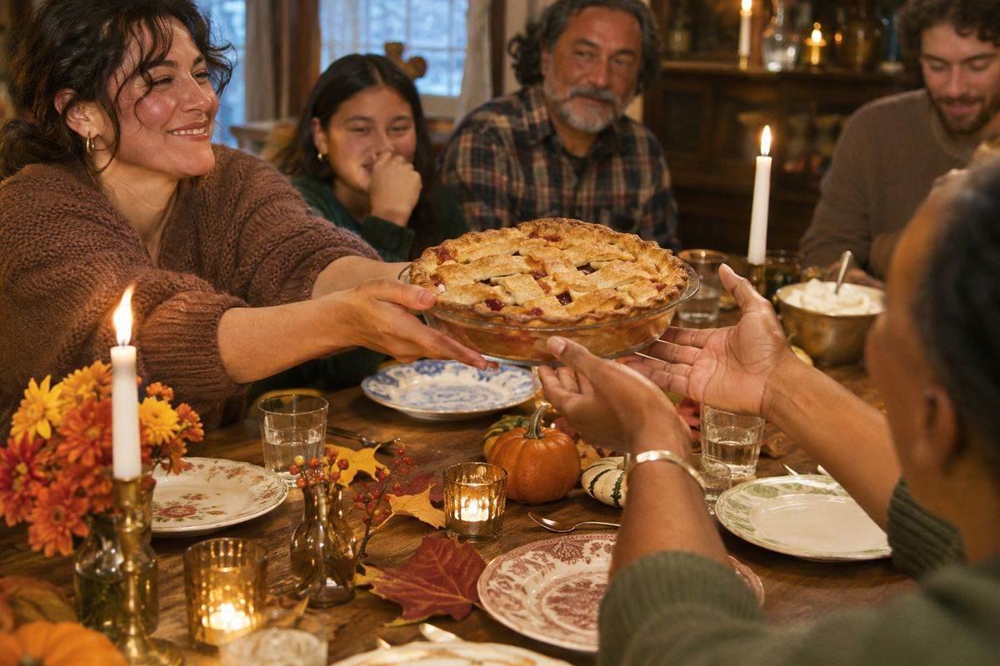

Friendsgiving Ideas 2026: Menu, Games, Decor and a Timeline
A host’s plan from the sign-up sheet to the morning after.

Short answer: The best Friendsgiving ideas keep the host’s job small. Pick a date before people travel (Saturday, November 21, 2026 suits most groups), cook one main yourself, run a potluck sign-up with fixed slots, serve one batch drink plus a zero-proof version, decorate with candles and kraft paper, and plan two easy games, like a gratitude jar and a blind pie contest.
Friendsgiving is Thanksgiving with the people you chose: usually a potluck, often in a small apartment, and with far fewer rules than the family version. These Friendsgiving ideas cover the whole night from the host’s side: when to hold it in 2026, a three-week timeline, a sign-up system that prevents five pies and no rolls, a menu for every kind of cook, drink math, cheap decor, ten games and the morning after.
When should you have Friendsgiving in 2026?
Thanksgiving falls on Thursday, November 26, 2026 (it’s on the federal holiday calendar), so the real question is which night your friends are all still in town. Here are the options and their catches.
| Date | Why it works | Watch out for |
|---|---|---|
| Sat, Nov 21 | Nobody has left town yet, and you get a full day to cook. | Your friends may have two invites that weekend, so claim it early. |
| Sun, Nov 22 | A long, lazy lunch. Everyone sleeps at home before the work week. | Start by 2 p.m. or it ends with half the table checking the time. |
| Wed, Nov 25 | The night before the holiday, for friends who stay in town. | It’s a travel day. Expect late arrivals and a few no-shows. |
| Fri, Nov 27 | “Leftovers-giving”: everyone brings what’s left from Thursday. | People are full and tired. Keep it casual and short. |
| Sat, Nov 28 | Catches the friends who got back early or never left. | Smaller crowd, and a lot of turkey fatigue. |
| Early November | Groups that scatter for the holiday, or a work Friendsgiving lunch. | It can feel early. Lean into fall food rather than the full spread. |
Planning one at work? Keep it a potluck lunch on a normal workday, make it optional, and label every dish with its allergens. Our list of holiday party games for adults has office-safe activities that don’t involve drinking or performing.
How to host Friendsgiving: a three-week timeline
The host’s secret is that almost nothing happens on the day. Count back from the party:
| When | What to do |
|---|---|
| 3 weeks out | Pick the date and a headcount. Send the invite with the start time, the address and one question: “Any allergies or foods you don’t eat?” |
| 2 weeks out | Open the potluck sign-up (below). Decide your main. Count chairs, plates, glasses and serving spoons, and borrow what’s missing. |
| 1 week out | Close the sign-up and send a reminder. Buy a frozen turkey (or order a fresh one to pick up a day or two before) and anything that keeps. Write an oven schedule. |
| 3–5 days out | Move a frozen turkey to the fridge. The CDC says to allow about 24 hours for every 4 to 5 pounds, so a 16-pound bird needs roughly 3 to 4 days and a 20-pound bird 4 to 5. |
| The day before | Set the table, chill the drinks, clear a fridge shelf for guests’ dishes, and make anything that reheats well (gravy, cranberry sauce, one side). |
| The day of | Turkey in the oven on schedule, a playlist on, an empty dishwasher, a trash bag in the kitchen. Then get dressed an hour early. |
| The morning after | Leftovers, the thank-you text and the photos. More on that at the end. |
If your Friendsgiving is this weekend, start at the one-week row and compress: send the sign-up today, and buy a fresh turkey or fresh bone-in breast so there’s no thawing. If you’re stuck with a frozen bird, the CDC’s holiday turkey guide allows cold-water thawing: about 30 minutes per pound (roughly 8 hours for a 16-pound bird), changing the water every 30 minutes and cooking the turkey immediately after. Never thaw it on the counter.
How to run the Friendsgiving potluck sign-up
The classic potluck failure is five desserts, three bags of chips and no vegetables. Fixed slots fix it: everyone knows exactly what to bring, and nobody has to guess.
The slot plan for 12 people
- Host: the main, gravy, and a vegetarian main if anyone needs one.
- 2 appetizers that need no oven (a cheese board, dips, spiced nuts). These buy you time if the turkey runs late.
- 2 potato or stuffing dishes and 2 vegetable sides.
- 1 salad or fresh side to cut through all the butter.
- 1 bread and 1 cranberry sauce.
- 2 desserts, ideally one pie and one thing that isn’t pie.
- 1 batch drink and 1 zero-proof drink plus ice.
- 1 “containers and foil” slot for sending leftovers home.
- 2 cleanup helpers, for anyone who can’t or won’t cook.
That’s 16 guest slots for the 11 people coming besides you, so a few guests take two; the containers and cleanup slots pair easily with a dish. For bigger groups, a good rule of thumb is one more side for every four extra guests and one more dessert for every six.
Three rules that save the night
- Ask who needs the oven. If you have one oven, the turkey owns it. Ask for dishes that arrive ready to serve or use the stovetop or a slow cooker, and have anyone who needs oven time note how hot and how long. Reheats go in while the turkey rests before carving.
- Serving dish, spoon, label. Every dish arrives in the dish it’s served in, with its own spoon and a small card naming it and its allergens (nuts, dairy, gluten, meat).
- Hot stays hot, cold stays cold. Hot dishes travel wrapped in a towel or an insulated bag; salads and dips ride in a cooler. Food shouldn’t sit out for more than two hours, so put the savory dishes away before dessert rather than after the games.
A shared spreadsheet, a free sign-up site or a pinned message in the group chat all work. Here’s a message you can paste:
Friendsgiving at ours, Saturday Nov 21, 6 p.m.! I’m doing the turkey, gravy and a vegetarian main. Claim one slot in the sheet by Wednesday: [link]. Bring your dish ready to serve, in the dish you’ll serve it in, with a spoon. If it needs the oven, write how hot and for how long. Allergies or food rules? Tell me and I’ll label everything. And bring a container for leftovers.
Friendsgiving food ideas for every kind of cook
Mix columns freely. A table with a classic turkey, two no-oven sides and a budget dessert is still a great table.
| Course | Classic | Vegetarian | No oven | Budget |
|---|---|---|---|---|
| Main | Roast turkey | Mushroom and lentil shepherd’s pie | Slow-cooker turkey breast | Sheet-pan chicken thighs |
| Starch | Mashed potatoes | Wild rice pilaf with cranberries | Slow-cooker mashed potatoes | Boxed stuffing with fresh onion and celery |
| Vegetable | Green bean casserole | Maple-glazed carrots | Garlicky stovetop green beans | Honey-butter carrots |
| Fresh | Cranberry sauce | Kale salad with apple and pecans | Shaved Brussels sprout salad | Cabbage and apple slaw |
| Bread | Dinner rolls | Skillet cornbread | Bakery focaccia | Drop biscuits |
| Dessert | Pumpkin pie | Apple crisp | No-bake pumpkin cheesecake cups | Store-bought pie with real whipped cream |
How much turkey for Friendsgiving?
The University of Illinois Extension suggests about one pound of whole turkey per person, or a pound and a half if you have hearty eaters or want leftovers. For 12 guests, that’s a 12- to 18-pound bird. If only a few people eat meat, a bone-in breast at half a pound per person is cheaper and frees the oven sooner.
Make the vegetarian main a real main
Vegetarian guests shouldn’t have to build dinner from sides. Give them a dish with weight to it (the shepherd’s pie, a stuffed squash, a big lasagna), and bake the stuffing in a dish with vegetable stock. The CDC says it’s safest to cook stuffing in a casserole dish rather than inside the turkey anyway, and this way everyone can eat it.
What it costs
The main is your biggest bill. The American Farm Bureau Federation’s 2025 Thanksgiving dinner survey, released in November 2025, priced a classic dinner for 10 at $55.18, about $5.52 per person, with a 16-pound frozen turkey averaging $21.50. Those are 2025 prices; the Farm Bureau publishes a new survey each year in the week before Thanksgiving. When the host covers the bird and everyone brings one dish, nobody spends much.
Cook the turkey to 165°F, checking with a food thermometer in three places, avoiding bone: the thickest part of the breast, where the thigh joins the body and where the wing joins the body. Refrigerate leftovers at 40°F or colder within two hours of cooking, and eat them within three to four days. All three numbers come from the CDC’s turkey guide.
Friendsgiving drinks ideas
Two drinks done well beat a full bar. Pick one batch drink and make a zero-proof twin with the same flavors, so non-drinkers get something better than soda.
- Cranberry ginger spritz. Cranberry juice, ginger beer and lime over ice. Top the boozy pitcher with sparkling wine or vodka; leave the other one as is.
- Hot cider in a slow cooker. Apple cider, cinnamon sticks and orange slices on low all evening. Put a bottle of bourbon or spiced rum beside it for anyone who wants to add a splash.
- Wine math. The NIH’s alcohol institute counts 5 ounces of wine as one standard drink. A 750 ml bottle holds about 25 ounces, so it pours roughly five glasses. Say 8 of your 12 guests drink wine and have two glasses over dinner: that’s 16 glasses, or 3 to 4 bottles.
- Coffee with dessert. A pot of decaf and a pot of regular, plus a little cream. It wakes the room up for games.
- Water on the table. A pitcher at each end. Nobody asks for it and everybody drinks it.
Give one guest the ice. You will run out of ice.
Friendsgiving decor ideas on a budget
The table is the decor. Spend your effort there and leave the rest of the room alone.
- A kraft paper runner. Roll brown paper down the table and leave markers out. By dessert it’s covered in doodles and thank-yous. Photograph it before you recycle it.
- Low centerpieces. Keep anything in the middle under about a foot tall so people can see each other.
- One bouquet, many jars. Split a supermarket bunch across a row of jars and glasses. It looks like three times the flowers.
- Unscented candles. Scented ones fight with the food. Keep real flames away from paper runners and dry leaves; use LED candles there.
- Mini pumpkins or pears as place cards. Write names with a paint pen. Guests take them home.
- Leaves and branches from a walk. Rinse, dry overnight, and scatter along the runner.
- Mismatched plates on purpose. Borrowed or thrifted plates look intentional if they share one color.
- A menu card that says who made what. It doubles as your allergy label and gives every cook a little credit.
- Warm light. Switch off the overhead light and use lamps and string lights. Everyone looks better, and so do the photos.
- Napkins tied with twine and rosemary. Ten minutes of work, and it smells like the holidays.

Friendsgiving ideas for adults: 10 games and activities
You need two or three, not ten: one for the table, one for after dinner and one that runs in the background all night.
| Activity | Time | Supplies | How it works |
|---|---|---|---|
| Gratitude jar | 15 min | Jar, paper slips, pens | Everyone drops in one anonymous thank-you. Read them aloud at dessert and guess who wrote each. |
| Blind pie contest | 20 min | Numbered plates, forks, dried beans, cups | Pies get numbers, not names. Everyone votes with a bean. The winner keeps a wooden-spoon trophy until next year. |
| The shared camera | All night | Everyone’s phone | Everyone shoots into one roll that stays sealed until Thanksgiving morning. Details below. |
| Who said it? | 20 min | 10 quotes from the group chat | Read a line from this year; teams guess who said it. Pick funny lines, never embarrassing ones. |
| Tiny-thanks toast | 10 min | Full glasses | Each person names one small, oddly specific thing they’re grateful for, like the neighbor who signs for their packages. |
| Recipe card swap | 10 min | Index cards | Everyone writes the recipe for their dish. You photograph the cards and send a mini cookbook later. |
| Friendsgiving bingo | All night | Printed 5×5 cards | Squares like “a dish arrives wrapped in a towel” or “stuffing versus dressing debate.” First full row wins the last slice. |
| Leftovers draft | 10 min | Numbers in a bowl, containers | Draw numbers for pick order and draft the leftovers like a fantasy league. |
| Walk before dessert | 25 min | Coats | Everyone does a lap around the block while the pie warms. Some of the best talk of the night happens here. |
| Game corner | 30+ min | One quick-to-learn game | Codenames, Uno or a deck of cards on the coffee table for whoever’s not ready to stop talking. |
The shared camera: open the photos on Thanksgiving morning
Often one person ends up as the photographer and misses the meal. A shared camera spreads the job around: everyone takes a few shots on their own phone, nobody sees them during the night, and the whole roll opens later. Time the reveal for when people are apart. Host on Saturday the 21st and set it for Thanksgiving morning, so the photos land while everyone is with family. Host on the Wednesday and set it for Black Friday.
How to run it with Filmsera
- In the Filmsera iPhone app, create a film called “Friendsgiving 2026” and choose a custom reveal time, like 9 a.m. on Thursday.
- Pick one look for the whole roll. The Disposable look is one of the five free cameras, and its flash suits a candlelit table.
- Save the QR code from the invite card and set it by the door or next to the pies, with one prompt on the card (borrow one from these creative photo prompts). You can also text the invite link to the group.
- Guests join with the free Filmsera app on iPhone, or from any phone’s browser with no app or account: they type a name and start shooting. Each person gets 12 shots by default.
- The photos stay sealed, even from you. At the reveal, everyone opens the film to the whole roll at once, each photo tagged with who took it, plus a short recap reel set to music.

The honest limits, as of November 2026: the host needs an iPhone (iOS 17 or later), and browser guests, including everyone on Android, take photos only, no video. A free film covers up to 10 guests; bigger groups need a one-time pass for that film. Free films keep photos on Filmsera’s servers for 30 days after the reveal, so save the ones you love to your phone. Our holiday parties page has the full details, and this guide to choosing a reveal time helps if you can’t decide between Thursday and Friday.
If you’d rather see the photos the same night, a shared album is the simpler tool; our guide to the best way to share photos with a group compares the free options.
Filmsera turns everyone’s phones into one shared disposable camera that stays sealed until the reveal you choose, so your Friendsgiving roll opens on Thanksgiving morning. Get Filmsera on the App Store
The morning after Friendsgiving
- Leftovers first. Pack them in shallow containers before you sit down for games, so nothing passes the two-hour mark. Send guests home with the containers from the sign-up, and tell them leftovers keep three to four days in the fridge.
- Run the dishwasher during dessert. The cleanup helpers load it while the pie goes around, and you wake up to half a kitchen instead of all of it.
- Save the sign-up sheet. Note which dishes disappeared and which came home untouched. Next year you copy it and change the date.
- Send the thank-you. One message to the group covers it:
Thank you for last night. The pie is gone, the candle wax is not. The photos open Thursday at 9 a.m. in the film, and I’ll send the recipe cards this week. Same table next year?
And if the night went well, you’re about six weeks from hosting again. Our New Year’s Eve party ideas at home reuse most of what you just learned.
FAQ
When is Friendsgiving 2026?
Friendsgiving has no fixed date. Thanksgiving 2026 is Thursday, November 26, so most groups pick the weekend before: Saturday, November 21 or Sunday, November 22. The Wednesday before and the Friday after also work, but expect some guests to be traveling. If your friends scatter for the holiday, an earlier November weekend is fine.
Who brings the turkey to Friendsgiving?
Usually the host, because the turkey needs the oven for hours and has to come out right before dinner. Guests bring sides, desserts and drinks that arrive ready to serve. If you’d rather not roast a whole bird, a bone-in turkey breast or a slow-cooker breast feeds a smaller group with much less oven time.
What should I bring to Friendsgiving if I can’t cook?
Bring something the meal can’t run without: ice, sparkling water, a batch drink, good bread from a bakery, a store-bought pie with real whipped cream, or a stack of takeout containers for leftovers. You can also claim a job instead of a dish, like setting the table or staying to wash up.
How many dishes do you need for a Friendsgiving potluck?
For 12 people, plan on the host’s main (plus a vegetarian main if anyone needs one), two no-oven appetizers, six sides including cranberry sauce, one bread, two desserts and two drinks. Add slots for leftover containers and cleanup, and a few guests will take two. For bigger groups, add a side for every four extra guests and a dessert for every six.
How do you host Friendsgiving on a budget?
Make it a true potluck, cover only the main yourself, and skip anything that costs money but nobody remembers, like themed paper goods. The Farm Bureau’s 2025 survey priced a 16-pound frozen turkey at $21.50 on average. Decorate with candles, kraft paper, grocery-store flowers split into jars and leaves from a walk.
Written by the Filmsera team
Filmsera is a shared disposable camera app for iPhone: create a film for your event, let guests join by QR code from the app or their phone's browser, and open the whole roll together at the reveal. Download on the App Store →
Photos in this article are illustrations created for Filmsera, not customer photos. App screenshots are from Filmsera on iPhone.